La bitácora de avances, día por día. Lo último, arriba.
se actualiza a cada release · las capturas salen del test automático (Playwright)
11 de julio de 2026
🎬 EL REEL del día: trofeo a casa + los andenes viven (en VIDEO, del propio server)
El reel de hoy junta lo nuevo con el juego corriendo de verdad: el robot lleva el trofeo hasta el
Tano y lo deja en la vitrina, grita el empate en Tigre (y canta con las DOS hinchadas cuando lo suspenden),
aguanta la final del ascenso en Ezeiza y baja a la cripta de la catedral de La Plata a buscar el mapa de
1882. Como siempre: streamea desde nuestro propio server, sin YouTube.
~80 segundos: el TROFEO al Tano y la vitrina 🏆 → TIGRE: el clásico suspendido y las
hinchadas juntas 🐯 → EZEIZA: ¡a la NACIONAL B! 💜 → LA PLATA: las diagonales y el mapa de la extorsión 🗺️.
video 🎬self-hosted 🏠resumen del día
11 de julio de 2026
🗺️ LA PLATA: las diagonales de Campana y el mapa de la extorsión (1882)
El andén de La Plata ahora tiene salida a Plaza Moreno — y ahí arranca la conspiración. Mirás el
plano de 1882 junto a la catedral y caés: cuadrado perfecto, diagonales cruzadas… este trazado es
IGUAL al de CAMPANA. Las dos ciudades se dibujaron el mismo año, con la misma regla. ¿Casualidad?
Entrás a la catedral más gótica del país, bajás a la cripta del archivo y en una vitrina brilla
EL MAPA ORIGINAL: al dorso, el acta de la votación de la capital de la provincia — tachaduras, un
nombre borrado (¿CAMPANA?) y una carta que dice "vote bien, o su ferrocarril no llega nunca".
HUBO EXTORSIÓN: por eso ganó La Plata. Te llevás el mapa 🗺️ al inventario — y los linyeras ya saben
lo que descubriste.
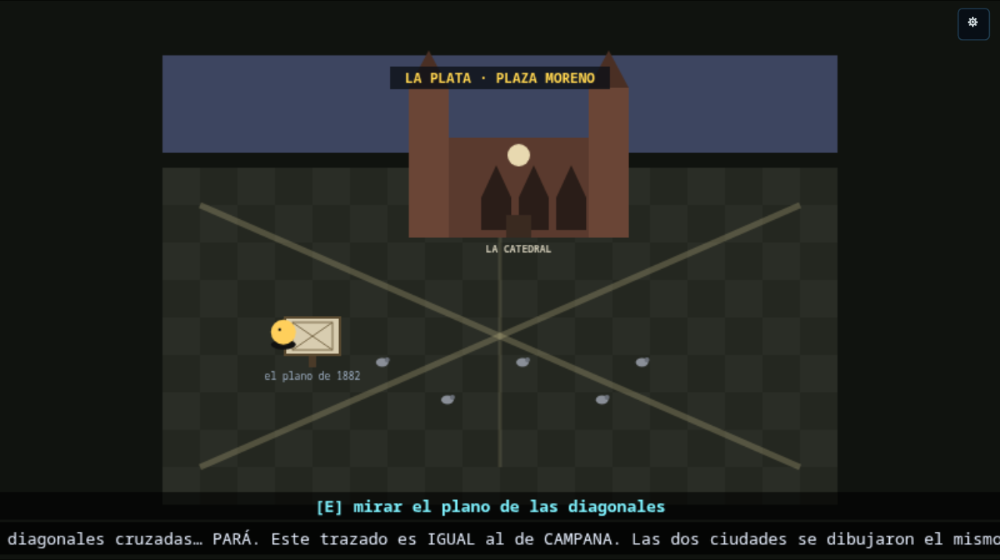
"PARÁ. Este trazado es IGUAL al de CAMPANA." — Plaza Moreno, el plano y la catedral.
La Plata ⛪diagonales 📐mapa 1882 🗺️conspiracióngrafo 45
11 de julio de 2026
💜 EZEIZA: Dálmine le gana el ascenso a Tristán Suárez — ¡A LA NACIONAL B!
Salida nueva en el andén de Ezeiza: el estadio 20 de Junio, donde el Lechero (Tristán
Suárez, verde y blanco) recibe a VILLA DÁLMINE por la FINAL DEL ASCENSO — con los aviones
pasando tan bajito que tapan los cantos.
El gol lo gritás vos [E]… y después viene lo peor: AGUANTAR. Tiro libre del Lechero — la saca el
arquero. Cabezazo en el área chica — otra vez el arquero. La última del partido — la descuelga del
ángulo. Pitazo final: ¡VILLA DÁLMINE A LA NACIONAL B! — papelitos violetas, vuelta olímpica, y
el Lechero aplaudiendo de pie.
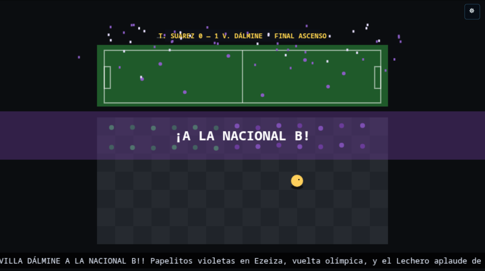
T. Suárez 0 — 1 V. Dálmine: la vuelta olímpica en el 20 de Junio.
Ezeiza ✈️Tristán Suárezascenso 💜Nacional B
11 de julio de 2026
🐯 TIGRE: el clásico que se pudre — y las DOS hinchadas juntas contra los canas
Los andenes grandes ahora VIVEN: bajate en Tigre y salí del andén a la cancha de Victoria,
donde juegan TIGRE vs VILLA DÁLMINE. Gol de Tigre, la local explota… y el empate lo gritás vos
[E]. Ahí se pudre todo: bengalas, corridas, botellazos — el árbitro se lleva a todos adentro:
SUSPENDIDO POR VIOLENCIA.
Y entonces pasa lo único que podía pasar en el fútbol argentino: las dos hinchadas —azul, rojo y
violeta— SE JUNTAN y encaran juntas el cordón policial, cantando lo mismo: "¡EL QUE NO SALTA ES UN
VIGILANTE!". Treinta mil personas saltando al unísono. Los canas retroceden. El clásico quedó 1-1 para
siempre, pero esa tarde nadie perdió.
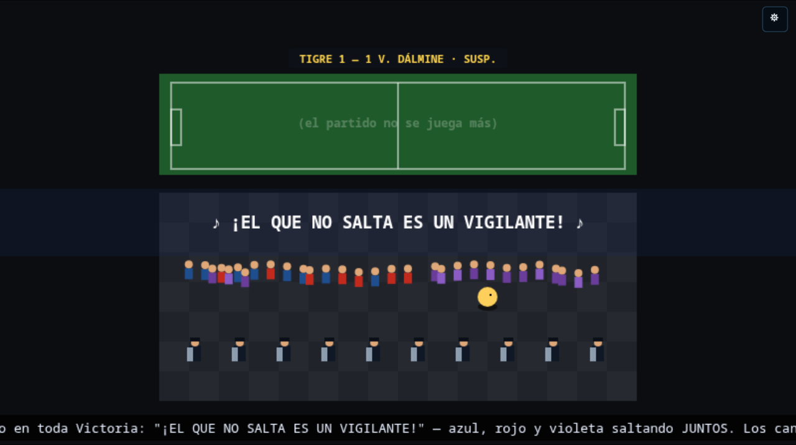
Suspendido el clásico, azul/rojo/violeta mezclados: "♪ ¡EL QUE NO SALTA ES UN VIGILANTE! ♪"
Tigre 🐯clásico suspendidofolclore 🤝salidas de andén
11 de julio de 2026
🏆 EL TROFEO A CASA: el Tano, la vitrina de la sede y vos SOCIO HONORARIO
¿Qué se hace con un trofeo de regata en plena tormenta solar? Se lo lleva a casa. El trofeo del
ocho se ganó PARA Campana, así que el viaje termina donde empezó el aguante: con el 🏆 en el inventario,
volvé a Campana y mostráselo al TANO — el hincha viejo del termo agarra el trofeo con las dos manos,
se le empañan los ojos… y te manda derecho a la vitrina de la SEDE (la llave la tiene él,
obvio).
[E] en la vitrina y listo: el trofeo queda expuesto PARA SIEMPRE entre las copas viejas del club
— cada vez que vuelvas a Campana, ahí está, brillando con su placa "OCHO CON TIMONEL · 2026". La
banda te salta el festejo, el club te nombra SOCIO HONORARIO (+80 🪙) y el coleccionable se vuelve
un pedazo permanente del mundo. El grafo de historia llegó a 42 aristas: hasta las pistas de los
linyeras te empujan a llevarlo.
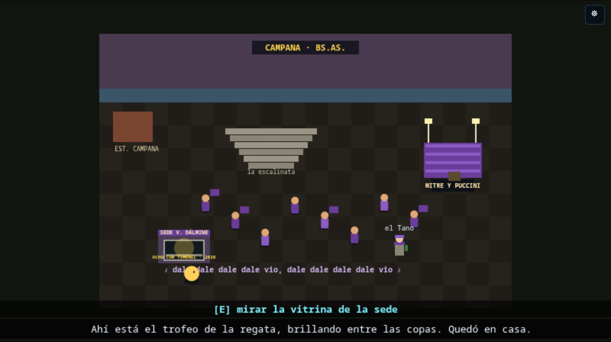
"Ahí está el trofeo de la regata, brillando entre las copas. Quedó en casa."
Campana 💜el Tanovitrina 🏆socio honorariografo 42
11 de julio de 2026
🎬 EL REEL: las novedades de la semana en VIDEO (el juego corriendo, sin trucos)
Estrenamos formato: un video estilo YouTube que junta las mejoras de los últimos días, grabado
del juego corriendo de verdad — el mismo robot que saca las capturas del blog ahora juega y
graba: camina por la Villa 31, mira la cartelera en tiempo real, se toma el 60, pasea por el
Chevallier y rema la final del ocho. Y detalle de casa: el video se reproduce desde nuestro
propio server, no depende de YouTube ni de nadie.
90 segundos: Villa 31 VIVA → trenes en tiempo real → la calle → el Polaco 📻 → el 60 a
Zárate → Once + el Chevallier → la costanera → LA REGATA 🚣 (y sí, el que rema fuera de ritmo es el robot).
video 🎬self-hosted 🏠resumen semanal
10 de julio de 2026
🚣 ZÁRATE: la costanera, los choris… y VOS timoneando la final del ocho 🏆
El Chevallier te baja en la costanera de Zárate: el Paraná adelante, el puesto de choris de
la costanera 🌭 humeando, el club Arsenal de pasada… y banderines por todos lados, porque hay
TORNEO en el club de remo: Campana vs Zárate en botes de competición. El tablero no miente:
single 1–0, doble par 1–0, cuatro 1–0 — Campana viene ganando TODO. Pero para la final del OCHO,
la que da el campeonato, al bote de Campana le falta el TIMONEL. Y ahí entrás vos.
La regata es un mini-juego de ritmo y timón: [E] en la zona verde del metrónomo = ¡BOGA! (el
ocho acelera; fuera de ritmo, los remos se enredan), y con W/S o A/D timoneás esquivando las boyas.
Ojo que Zárate aprieta en el final. Si cruzás la meta primero: CAMPANA CAMPEÓN en todas las
combinaciones, papelitos violetas, y te dan EL TROFEO 🏆 — queda en tu inventario. ¿Qué se hace
con un trofeo de regata en plena tormenta solar? Se verá…
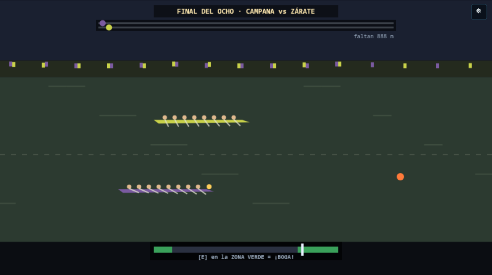
¡LARGARON! El ocho violeta de Campana (con vos en la popa) contra el amarillo de Zárate.
Zárate 🌅club de remo 🚣Campana 💜trofeo 🏆mini-juego
10 de julio de 2026
🚍 El CHEVALLIER a Zárate: un viaje de LUJO (podés caminar por el micro)
La Línea A del subte llega ahora a ONCE (Plaza Miserere): kiosco, santería (Once
es Once), saldos y retazos… y al fondo la dársena del CHEVALLIER, el rápido a Zárate. El pasaje
sale 25 monedas — y si no te alcanza, el chofer te mira: «subí, pibe, hoy viaja vacío».
Arriba es OTRO mundo: el micro es caminable — pasillo central, butacas que se hunden,
ventanillas con la Panamericana pasando, la chapa de AIRE ACONDICIONADO ❄️ y el dispenser de
cortadito de a bordo ☕ (cortesía de la casa, UNO por pasajero). Sentate en tu butaca y el viaje
pasa volando; caminá y disfrutalo, que esto es VIAJAR. Te baja en la costanera.
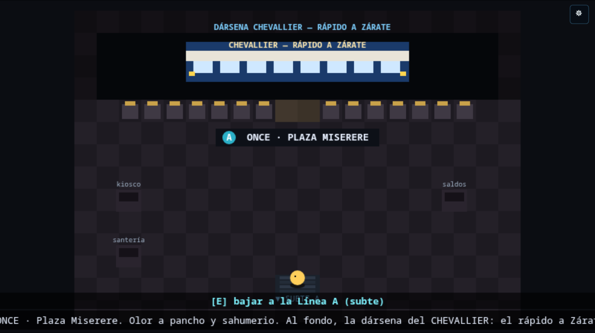
Once · Plaza Miserere — la dársena del Chevallier esperando, entre el kiosco y la santería.
Once 🚇Línea AChevallier 🚍aire acondicionado ❄️
10 de julio de 2026
🚌 El MÍTICO 60 a Zárate: un viaje tan largo que llegás… al principio
El tren Belgrano Norte (desde Retiro) tiene ahora salida a pie: te deja «cerca» de
Puente Saavedra — cerca es un decir: la última parte es caminando por Av. Maipú, cruzando
el puente sobre la General Paz (con los autitos pasando abajo). Del otro lado espera, resoplando,
el 60 RAMAL ZÁRATE: el colectivo más largo de la mitología porteña.
Subís, asiento libre al fondo, ¿qué puede salir mal? Una hora después… todavía General Paz. Dos
horas… Panamericana. Cuatro horas… ¿esto es Escobar? ¿OTRA VEZ? A la sexta hora los párpados pesan,
y te despertás en la cama del búnker: el viaje era tan largo que el loop te reclamó. No es
un bug, es el gag — y queda anotado en tu historia. (Dicen que hay una manera VIP de ir al norte…)
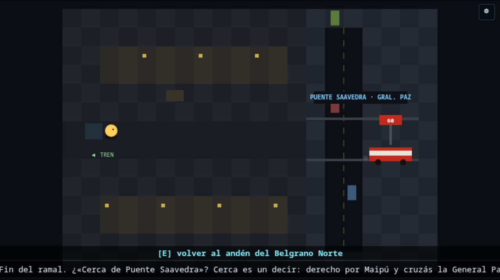
Av. Maipú a pie, el puente sobre la General Paz… y el 60 a Zárate esperando en la parada.
el 60 🚌Puente Saavedra 🚶gag del loop 😴
10 de julio de 2026
📻 EL MISTERIO DEL POLACO: el linyera de Constitución desapareció (y alguien tiene que buscarlo)
Cada estación de la red tiene ahora su linyera propio: la Turca en el delta, el Profe en La
Plata, el Chispa en Ezeiza, el Vasco en el campo, el Flaco en el conurbano… y dos con nombre e historia
grande: la GALLEGA (la memoria de Retiro, ex enfermera, vive bajo la bóveda) y el POLACO
(20 años bajo el reloj de Constitución, ex ferroviario del Roca).
Pero el Polaco faltó a la olla de los jueves — nunca faltó en 20 años. La Gallega te da el caso.
En su rincón, Firulais cuida el carrito: adentro hay una nota… y las vías siempre llevan a alguna
parte. Si lo encontrás, te espera el mejor regalo del juego: su radiecita 📻 — usala del inventario
y entre las estáticas te sopla la pista de qué te toca hacer, estés donde estés.
La Gallega y el Polaco chatean con IA: preguntale a ella por la terminal, a él por la voz de la
tormenta. Y ojo: "desaparecido está el que nadie busca".
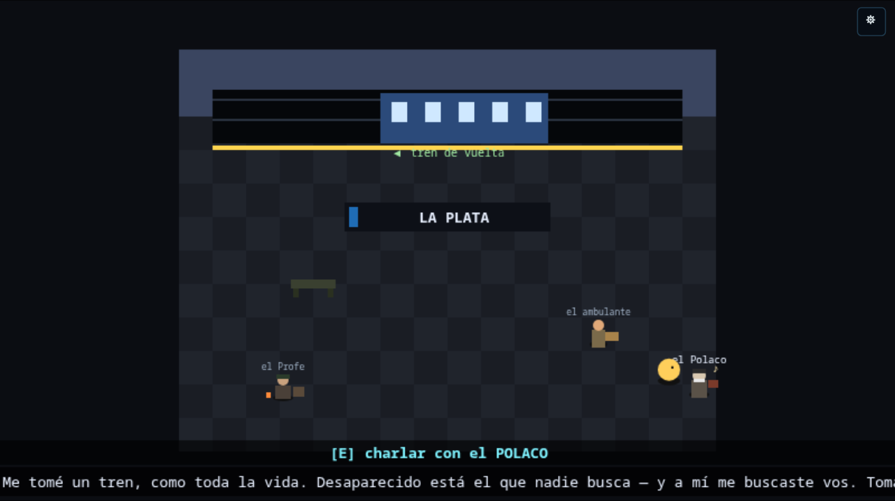
El andén de La Plata — el Profe, el ambulante… y el POLACO con su radiecita. Misterio resuelto.
misterio 🔍linyerasla Gallegael Polaco 📻NPCs con IA
10 de julio de 2026
🕐 La cartelera de trenes anda EN TIEMPO REAL (con el reloj de Buenos Aires de verdad)
Las terminales tienen ahora su cartelera de SALIDAS de verdad: los minutos que ves se calculan
con el reloj real de Buenos Aires y las frecuencias reales de cada ramal (La Plata cada 12
minutos hasta la 1 de la mañana, Cañuelas uno por hora…). Si entrás a las 3 AM, no hay trenes — como en
la vida.
Y como en la vida, hay lío: demoras por accidente en un paso a nivel, robo de cables, obras,
asamblea gremial o la propia tormenta solar. El estado del servicio es el mismo para todos los jugadores,
y el sistema quedó enchufable a la API real de transporte — el día que se conecte, las demoras del
juego van a ser las de verdad. También desfila el ticker de NOTICIAS del día (el mismo banco vivo
del cine) bajo los molinetes, y el menú del molinete te dice cuánto falta para cada tren.
Constitución 08:51 — los 5 ramales del Roca con sus minutos reales y el estado del servicio.
tiempo real 🕐Roca / Mitredemoras ⚠ticker 📰
10 de julio de 2026
🚌 Afuera de Constitución: bondis, canas y el chori de la salida
La SALIDA de Constitución ya no dice "próximamente": salís a la puerta de la terminal y está todo
lo que tiene que estar. La parada de bondis con las líneas reales de Plaza Constitución (12,
100, 129, 133, 143, 148) y los colectivos que llegan, paran y arrancan — aunque el chofer te avisa:
"con la tormenta los bondis van cuando pueden, pibe, te conviene el tren".
Los canas de la ronda patrullan la vereda ("circulando, circulando, acá no hay nada que ver") y
los puestos de comida de estación hacen patria: chori 🌭, bondiola que chorrea 🥖,
tortafritas 🫓 y la garrapiñada 🥜 de la maquinita de siempre — todo se come del inventario
y te repone la vida.
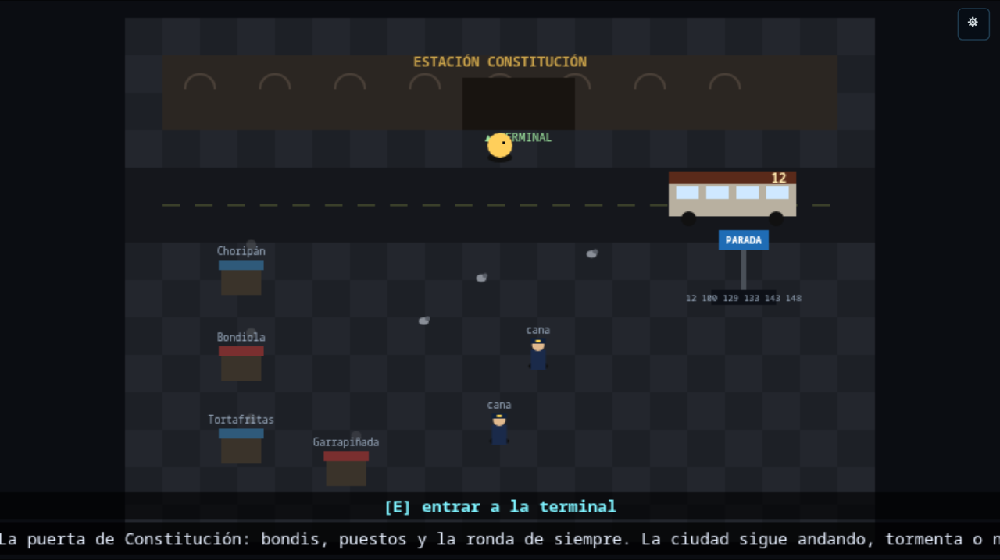
La puerta de Constitución — el 12 en la parada, los canas de ronda y los cuatro puestos humeando.
Constituciónbondis 🚌canas 👮chori 🌭
10 de julio de 2026
📰 Los locales de las terminales abrieron: el diario te da LA PISTA, la librería te lee el Martín Fierro
Los locales de Constitución y Retiro dejaron de ser vidrieras: ahora todos hacen algo.
En Constitución: el puesto de DIARIOS 📰 tiene el titular del día — que es, ni más ni menos,
la pista de qué te conviene hacer ahora en la historia; y en el LOCUTORIO 📞 escuchás de la
cabina de al lado los rumores que corren por la ciudad.
En Retiro: la LIBRERÍA 📚 te lee versos del Martín Fierro ("Los hermanos sean
unidos…" — uno distinto con cada [E]) y la FLORERÍA 🌸 te vende flores, que son la moneda con la que
se juega al truco. Y en las dos terminales el CAFÉ ☕ te sirve un cortado que repone vida,
como manda la estación.
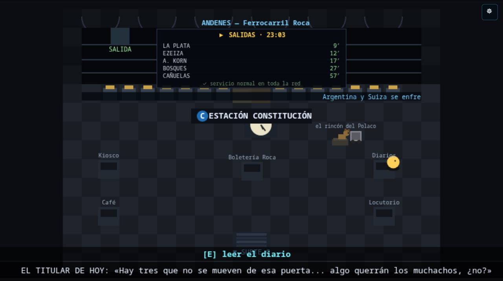
Constitución — el titular de hoy en el puesto de diarios es LA PISTA de la historia.
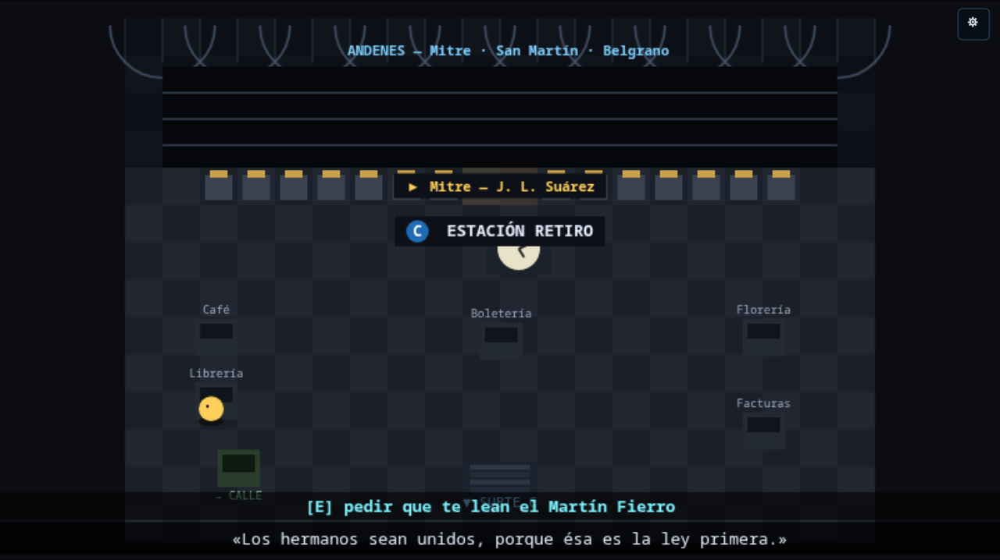
Retiro — la librería te lee el Martín Fierro, verso a verso.
🙏 La Villa 31 está VIVA: el mandado del cura, la abuela Coca y las rondas de la olla
El barrio se llenó de vida: vecinos que pasean, un perro que va y viene, y un mural del
Padre Mugica ("MUGICA VIVE"). Y dos cosas para hacer:
El mandado del cura: la abuela Coca ya no puede caminar hasta la olla — el cura te pide que le
lleves un plato calentito hasta la puerta de su casa. Cuando volvés, te da su bendición: una
estampita 🙏 que te protege y te sana cuando la usás del inventario.
Las rondas de la olla: el comedor ahora es rejugable — cuando terminás de servir a todos, [E] en la
olla arranca otra ronda (la cola se renueva y cada ronda paga la changa).
La Villa 31 — la abuela Coca en su puerta, el mural del Padre Mugica, el perro del barrio y la olla siempre a fuego.
Villa 31quest del curarondas 🍲estampita 🙏
10 de julio de 2026
🤖 La IA del juego ahora se cuida (y se abarata) sola — y podés mirarla
Detrás de escena montamos un sistema de salud y costos de la IA: cada 6 horas un chequeo (si algo se
degrada, alerta sola y revierte), y todos los días un scout banchmarkea los modelos disponibles con
estándares por uso (chat de NPCs / generación de niveles / carteles-cine) y un autotune cambia al mejor
y más barato solo si lo prueba de punta a punta (con rollback automático). Todo queda publicado en una
página nueva, 🤖 IA, con los reportes por día.
IAcostosautotuneobservabilidad
10 de julio de 2026
🍑 Los VENDEDORES AMBULANTES de los andenes
Cada andén de destino tiene ahora su vendedor ambulante, el clásico del tren argentino, con la comida
de su zona: fruta del delta en Tigre 🍑, tortas fritas en La Plata 🫓, sanguchito de miga a
precio de aeropuerto en Ezeiza 🥪, picada de campo por Cañuelas 🧀 y bizcochos de grasa en el
conurbano 🥐. Cada uno con su pregón ("¡Tortas friiiitas! ¡Calentitas!") — comprás con [E] y la comida te cura
desde el inventario.
El andén de La Plata — el ambulante con la canasta y las tortas fritas calentitas.
trenescomida regionalambulantes
10 de julio de 2026
🎶 La popular SUENA: el canto de Dálmine, en chiptune
Al llegar a Campana ahora se escucha EL canto de la popular —"dale dale dale dale vio, dale dale
dale dale vio, daleeeeee daleeee viooooooo"— compuesto en chiptune con el motor de audio del juego (cero
archivos, todo Web Audio en vivo), con el bombo de la banda marcando los tiempos fuertes. Suena en la calle
del estadio y en la tribuna, y se corta de golpe cuando el portal te chupa. También lo podés escuchar desde el
panel de debug (🎶).
audiochiptuneVilla Dálmine 💜bombo
9 de julio de 2026
💜 LA ODISEA A CAMPANA: piquete de la UBA, el clásico, y Villa Dálmine vs CADU
La quest más grande del juego hasta ahora, de punta a punta. El maquinista de Villa Ballester no te lleva a
Campana (está en pedo)… pero hay una vuelta:
Tomás el tren ROJO de la San Martín en Retiro y el tren frena en Ciudad Universitaria: hay un
piquete de estudiantes de la UBA sobre las vías por el recorte del presupuesto universitario, justo
en la sede del CBC (la estudiante del piquete es un NPC con IA). Y al lado… el Monumental, con el
clásico River-Boca.
Ciudad Universitaria — el tren rojo parado, el piquete de la UBA, el CBC, y el Monumental ahí nomás.
Te colás a la cancha, alentás a River a los gritos, y del lado visitante manoteás una bandera de
Boca. Se la llevás al maquinista de Ballester y —milagro futbolero— se le pasa el pedo de golpe:
te lleva gratis a Campana.
El Monumental — el clásico, tu tribuna de River, y la bandera de Boca brillando del lado visitante…
En Campana pasás por la escalinata, te sumás a la banda violeta —y te cruzás con
el Tano, un hincha de toda la vida, socio vitalicio y ex obrero de la fábrica Dálmine, NPC con IA
que te cuenta la historia del club de barrio— y entrás al Coliseo de Mitre y Puccini: juegan Villa Dálmine vs CADU, el clásico de la zona. En el entretiempo te clavás
el mejor chori de tu vida (+vida completa) y en el segundo tiempo gritás los 4 goles de Dálmine…
hasta que un satélite de la IA maligna cae del cielo, rasga el espacio-tiempo y un portal te
devuelve al búnker del loop, al lado de tu cama. ¿Fue real? Tenés olor a chori.
Mitre y Puccini — la popular violeta, Dálmine vs CADU. Faltan el chori, los 4 goles… y el portal. 💜
odiseaUBA ✊River-BocaVilla Dálmine 💜portal
9 de julio de 2026
🍷 Villa Ballester: el maquinista se pasó de copa
Uno de los destinos de tren ahora tiene historia. Llegás a Villa Ballester, donde se combina para
Campana… pero el tren no sale: el maquinista se quedó en la parrilla del andén con una tira
de asado y vino, y se pasó de copa. Hay parrilla humeante, el cartel de "CAMPANA — DEMORADO", y podés
charlar con el maquinista (un NPC con IA, curda simpático que no maneja en pedo, "primero la seguridad").
Villa Ballester — el maquinista, la parrilla con la tira de asado, y el servicio a Campana… demorado.
Es el arranque de una odisea más grande que estamos construyendo (San Martín, el clásico, la
hinchada, Campana y Villa Dálmine…). De a poco.
Villa BallesterNPC con IAasado 🔥quest
9 de julio de 2026
🚆 Ahora se toma el TREN: de las terminales a los ramales
Los molinetes de tren de Constitución y Retiro dejaron de ser decorado: te parás en el molinete,
elegís un ramal (La Plata, Ezeiza, Tigre, Cañuelas…) y tomás el tren. Hay un viaje con el
paisaje que scrollea —tematizado por destino: ciudad, río del delta, campo, aeropuerto— y llegás a un andén de
destino donde te bajás, mirás el cartel de la estación y tomás el tren de vuelta.
El viaje — el paisaje pasa (acá "ciudad", rumbo a La Plata) con el tren en primer plano y la barra de progreso.El andén de destino — te bajás, mirás el cartel y tomás el tren de vuelta a la terminal.
trenConstitución/Retiroramalesmundo abierto
8 de julio de 2026
🍲 Retiro, la Línea San Martín y la Villa 31 (con comedor popular e iglesia del Padre Mugica)
Seguimos la red de tren para el otro lado: la Línea C ahora también te lleva a Retiro, la gran
terminal del norte —la bóveda de hierro y vidrio del Mitre, los molinetes de las líneas Mitre, San Martín y
Belgrano—. Y de Retiro salís a la calle: siguiendo las vías de la Línea San Martín llegás a la
Villa 31 (Barrio Padre Mugica), ahí nomás atrás.
Estación Retiro — el hall del Mitre. La salida "→ CALLE" te lleva a la Villa 31.
En la Villa 31 una referente te contrata para el comedor popular (Doña Rosa, con la olla al fuego), y
podés visitar la iglesia del Padre Mugica (la capilla Cristo Obrero) y charlar con el cura villero.
Los dos son NPCs con IA: Doña Rosa habla del barrio, el hambre y la solidaridad; el cura, con una mirada
peronista y holística, une el Evangelio, la justicia social y la idea de que todo está conectado.
Y ya se puede laburar en la olla: agarrás un plato del fuego y se lo servís a cada vecino de la cola;
cuando les diste a todos, Doña Rosa te agradece y te paga la changa. 🍽️
Villa 31 (Barrio Padre Mugica) — el comedor popular (Doña Rosa) con la cola de vecinos para servir, y la capilla Cristo Obrero (el cura).
RetiroVilla 31comedor popularPadre MugicaNPCs con IA
8 de julio de 2026
🚆 Arranca la red de tren: la terminal de Constitución
Ganar el Nivel 2 ya no termina el juego: te sale la pantalla de "¡Ganaste!" pero ahora podés
seguir jugando. Se te habilita la Línea C del subte (la que une Retiro con Constitución) y podés
viajar a la gran terminal del Roca: el hall abovedado, el reloj histórico, los molinetes del tren con los
ramales (La Plata, Ezeiza, Korn…) y los locales del andén.
Estación Constitución — el hall del Ferrocarril Roca (los locales son mock por ahora; los iteramos).
Es la primera etapa de una expansión más grande: después vienen Retiro, la Línea San Martín y
Villa 31 con un comedor popular. Todo data-driven y metido en el grafo de la historia.
Nivel 2subte/trenmundo abierto
8 de julio de 2026
🔔🎗️ El Cabildo de Mayo: la campana, la escarapela y dos próceres con IA
En Plaza de Mayo ahora entrás al Cabildo y podés repicar la campana: la primera vez
caen escarapelas y agarrás una (guiño al 25 de mayo de 1810). Si la volvés a tocar, la campana
toca el Himno (la parte de "o juremos con gloria morir", con timbre de carillón).
Y con la escarapela puesta aparecen granaderos y dos personajes nuevos: Domingo French y
Antonio Luis Beruti —los que repartían las cintas en 1810—, chateables con IA y memoria. Hablan
solo de la Revolución de Mayo y la Independencia… y te confían que notaron "algo raro": el tiempo que se tuerce,
hechos que se repiten. No saben que es la IA manipulando el espacio-tiempo.
Plaza de Mayo — el Cabildo (izq.) con Domingo French y Antonio Beruti; la Pirámide y las Madres al centro; la Casa Rosada (der.).
CabildoNPCs con IAhistoria 🇦🇷música chiptune
8 de julio de 2026
🐛 Arreglado: el chat ya no se cuelga
Había un bug feo: después de un par de mensajes, el chat con los NPC se "colgaba" y no respondía hasta que
cerrabas y volvías a abrir. Era un candado interno que no se soltaba si algo fallaba al procesar la
respuesta. Ahora se libera pase lo que pase. No tiene nada que ver con la IA ni con tu suscripción.
fixchat IA
6–7 de julio de 2026
🎵 Música chiptune en vivo, sin un solo archivo de audio
Todo el audio se compone en tiempo real con Web Audio (cero mp3). Sumamos varios temas nuevos según
dónde estés: la Marcha Peronista en el piquete, el Himno Nacional en el Obelisco, un chiptune
oriental (pentatónico) al entrar al súper chino, un motor heavy criollo con distorsión para
Cemento, y cinco cumbias villeras distintas que suenan al azar en el edificio abandonado y la cueva.
audiochiptune
3–4 de julio de 2026
🚇 El subte te lleva a Plaza de Mayo — el Nivel 2
Ganás el piquete de Lavalle, herís al satélite y aparece la boca del subte. Con la tarjeta
SUBE (o un boleto que te vende el boletero) pasás el molinete y viajás entre estaciones reales
(Florida, Lavalle, Catedral). Catedral te deja en Plaza de Mayo, donde arranca el Nivel 2: entrás
a la tumba de San Martín en la Catedral, sacás el chip del Libertador, esquivás los drones de la
IA y lo armás en la Pirámide de Mayo — la señal sube a los satélites y arranca la liberación, con
cinemática de cierre.
Estación Lavalle (Línea C) — los molinetes leen tu tarjeta SUBE; el tren llega al andén.
Nivel 2subteSan Martín
4 de julio de 2026
🗺️ El mapa del barrio, pulido
El mapa tiene tres vistas —la cuadra (skyline), la manzana (los cajones de edificios) y los subsuelos— más
una pestaña de subte con el plano de las líneas. Lo movés con las flechas/WASD (cursor caja a
caja) y ahora hay un minimapa en el HUD mientras jugás. También se ve mejor cuánta gente hay online
por sala.
mapaUX
¿Querés el detalle técnico de cada cosa? Está en el
CHANGELOG
del repo. Y si te interesa la infra que lo hace andar, mirá Cómo funciona.